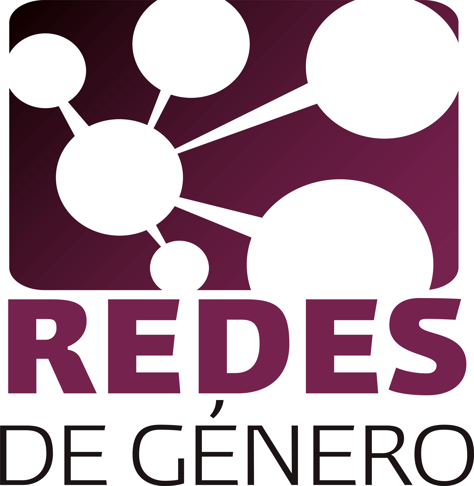
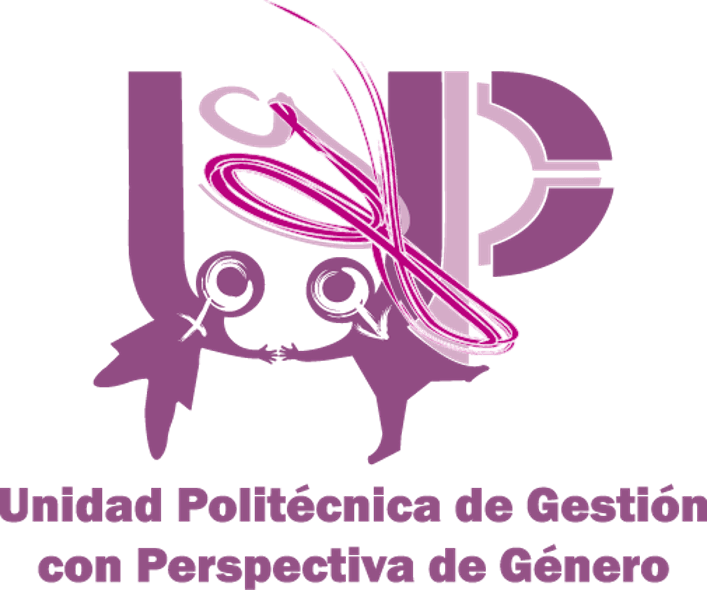
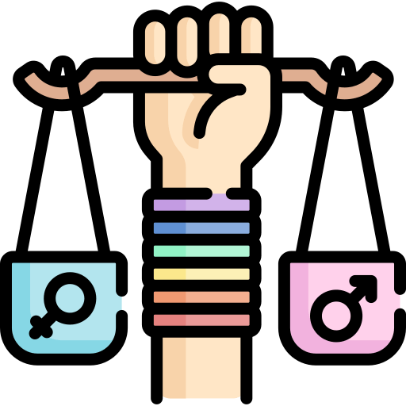
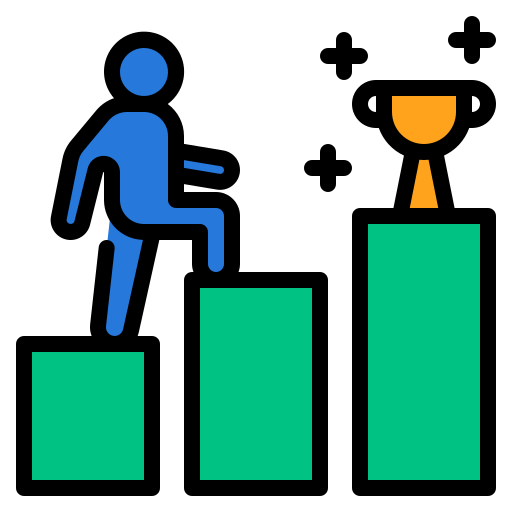
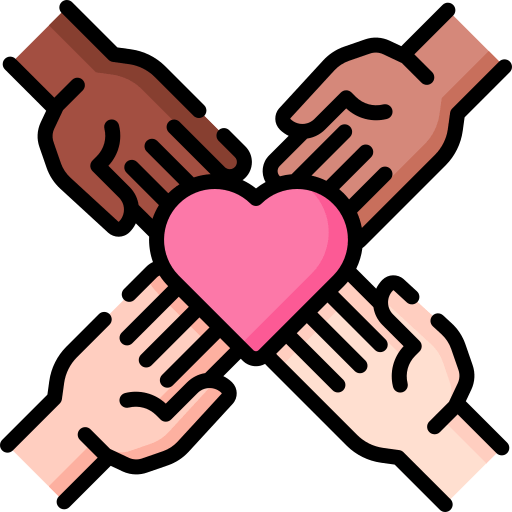
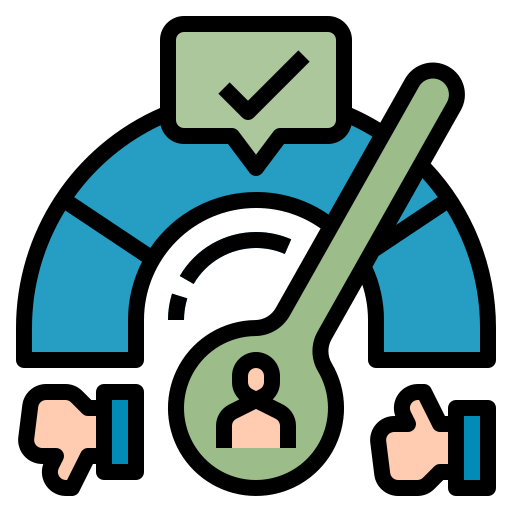
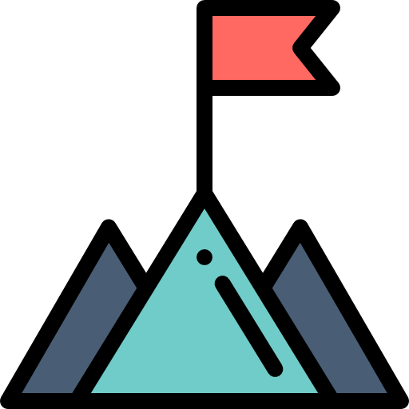
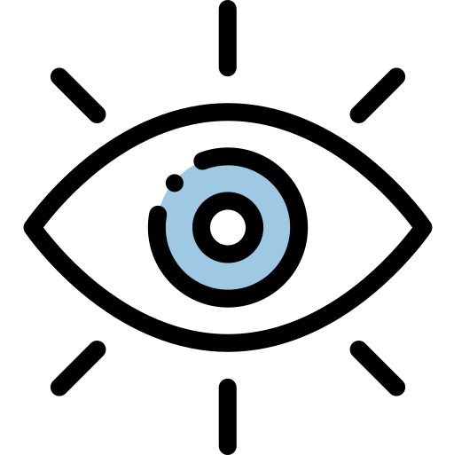

Red de Género

¿Qué son las redes de género?
Las Redes de Género son un conjunto de personas interrelacionadas entre sí, que pertenecen a cada uno de los centros y unidades que conforman el Instituto Politécnico Nacional, incluyendo las de diversas zonas geográficas de la República Mexicana; y desempeñan diversas acciones con la finalidad de contribuir en la integración del enfoque de género en el quehacer institucional.
Origen de las redes de género
Si bien las Redes de Género se propusieron desde el año 2012 por la UPGPG como una estrategia de impacto para la comunidad politécnica, han sido sus coordinaciones e integrantes –estudiantes, docentes, personal directivo y personal administrativo– quienes las confeccionan a partir de su propia realidad, convirtiéndose en aquellos espacios de coincidencia que requiere la Unidad para reforzar metas, compartir experiencias, exponer nuevas oportunidades de aprendizaje y abrir canales de comunicación.

Objetivo
Promover la participación de sus estudiantes y trabajadores/as, en la construcción de una cultura de igualdad y buen trato en los espacios educativos y laborales a través de actividades de sensibilización, capacitación, difusión y promoción de tal manera que sus logros permiten, en gran medida, responder a programas institucionales como a compromisos nacionales e internacionales en materia de igualdad, no violencia y no discriminación.
Algunas de sus funciones principales son:
-

1. Fomentar espacios de sensibilización, capacitación, difusión y promoción con perspectiva de género que fomenten la diversidad e igualdad de oportunidades.
-
2. Promover acciones de prevención, atención y erradicación contra la violencia y discriminación tanto en el ámbito educativo como laboral.
-

3. Contribuir con la Unidad en el desarrollo de sus metas y funciones, así como aquellas que les sean encomendadas de manera específica.
-

4. Promover el uso de un lenguaje incluyente y no sexista en la comunicación institucional escrita, verbal, no verbal y gráfica.
-

5. Participar en las acciones de formación diseñadas por la Unidad y dirigidas a sus coordinaciones e integrantes.
-

6. Apoyar el cumplimiento de indicadores institucionales con perspectiva de género.

Misión
Promover en el Instituto Politécnico Nacional una cultura de igualdad, inclusión, respeto y no violencia que asegure la formación integral de sus estudiantes y trabajadoras/es, lo anterior bajo criterios de transversalidad e institucionalización en sus políticas, proyectos, planes y programas de estudio.

Visión
Reconocer al Instituto Politécnico Nacional como una Institución de Educación Superior a la vanguardia en su gestión con perspectiva de género y desarrollo de acciones encaminadas a acelerar la igualdad entre mujeres y hombres.